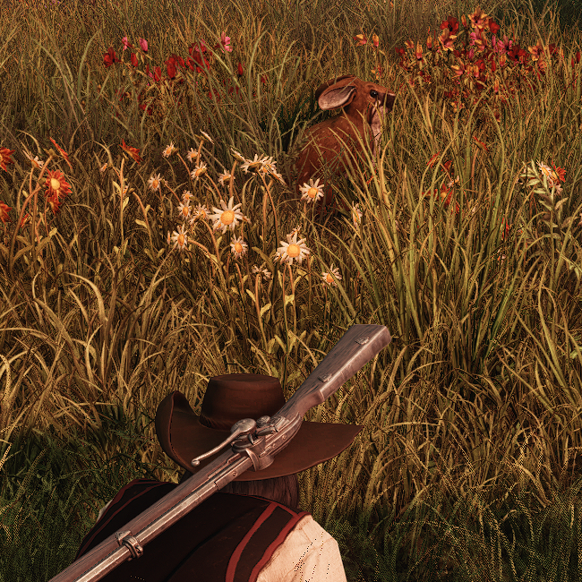

Coelhos são encontrados principalmente em campos mais inóspitos, porém existe uma ilha em Costa Tempestuosa onde há vários coelhos soltos após a morte de seu criador.
Sua carne é bastante apreciada em sopas e assados, mas também há outros usos como ingrediente. Sua pele pode ser usada para fazer sapatos ou luvas, além disso não é possível pelo tamanho da pele.